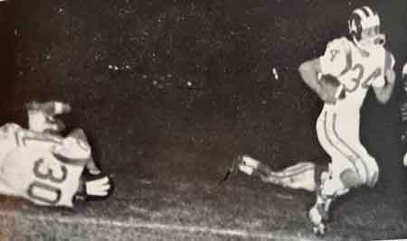
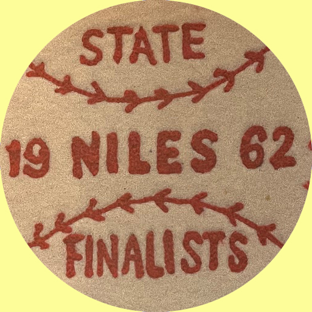
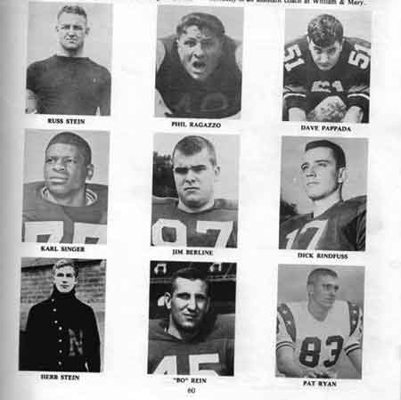

Ward-Thomas Museum


Robert 'Bo' Rein
Ward — Thomas
Museum
Home of the Niles Historical Society
503 Brown Street Niles, Ohio 44446
Click here to become a Niles Historical Society Member or to renew your membership
Click on any photograph to view a larger image, click on image again to zoom into photograph.
| Bo Rein “Robert Edward "Bo" Rein (July 20, 1945 – January 10, 1980) was an American football and baseball player and football coach. He was a two-sport athlete at Ohio State University and served as the head football coach at North Carolina State University from 1976 to 1979, compiling a record of 27–18–1. Following the 1979 season, Rein had assumed the role as head coach at Louisiana State University, but was killed in an aircraft accident in January 1980 before he ever coached a game for the Tigers. Rein is the namesake of football player awards at Ohio State and NC State. |
||
|
Coach Bo Rein |
Bo Rein was born and raised in Niles, Ohio, where he is still remembered as a legendary high school athlete for the Red Dragons of Niles McKinley High School. Rein played at Niles during their heyday, when the Red Dragons under coach Tony Mason were one of the top big school powerhouses in high school football in Ohio. Rein played baseball at Ohio State University from 1965 through 1967, helping the Buckeyes win the 1966 College World Series, the school’s only NCAA baseball title. Rein played shortstop and left field. He led his team in stolen bases in 1965 and 1966, and in doubles and runs in 1966. Rein had 49 career stolen bases, which stood as a team record until he was surpassed by Roy Marsh in the early 1990s. In 1965 and 1966, Ohio State participated in the College World Series, and Rein was selected in both years to the All–Tournament team. In 1965, the Buckeyes lost the championship game to Arizona State. In 1966, Ohio State won the championship, defeating Oklahoma State. In the championship game, Rein contributed a double. After he finished his college career, Rein was drafted by the Cleveland Indians. He was playing for the Portland Beavers, the Indians' Triple–A farm team, when Achilles tendon and hamstring problems ended his baseball career. From 1964 to 1966, Rein was a three–year
starter at left halfback for the Ohio State Buckeyes football
team. He led his team in receptions in 1964 and 1965, and in rushing
in 1966. Rein finished at Ohio State the team career receptions
leader. Following his Ohio State career, Rein was drafted by the
Baltimore Colts.” |
|
Bo's fifth grade class photograph. This would be about the time that Bo began playing baseball on a team with his older brother. |
My brother
Bo; the one I knew. By Marcy Rein In 1954 we moved to Howland, Bolindale to be exact. That is until the family packed up and moved for what would be a one-year stint to the Upper Peninsula of Michigan where mom and dad were half–owners of a fishing resort. As my father was an avid fisherman, my older brothers also became experienced fishermen. Bo loved the wilderness so much so that his childhood goal was to become a forest ranger. Destiny (in the form of a long harsh Michigan winter)however changed the course of ranger Bo’s future. When we returned to Ohio, dad was able to regain his job at Republic Steel. Had it not been for our one-year detour to Michigan,
Bo could have donned the orange and black and been a Howland Tiger
(oh.my!), but as luck would have it, the Rein’s new home
was a lovely ranch–style home nestled in Niles. The red
and blue roots of the legend begins to take hold in Dragontown. |
Bo rein wearing the Niles McKinley football letter sweater with the 1961 State Champion medallion on his sleeve. |
|
St. Stephen 1957 football team
List of player names from |
By 7th grade, he excelled in basketball as well as baseball. He begged my dad to put up a basketball hoop over the garage. Eventually my father agreed and all the neighborhood boys would come to play. The double–wide driveway served as a perfect location for half–court games. Several replacements of the side window adjacent to the driveway later, Bo was forced to excel at H-O-R-S-E only. In the fall of 7th grade, coaches Hugh Blakely, Vince Holmes and Joe Smaltz encouraged Bo to try football. Not only did Bo remain close to these gentlemen throughout his life, he credited them for his love of the game of football (and of course a win against arch rival Mt. Carmel). With that autumn playing for St. Stephens and the right coaches, football became Bo’s future. The legend grows. The 1957 St. Stephen’s Football team was undefeated and unscored upon. Bo Rein would go on to Play at Ohio State while Denny Flanagan and Rick Sygar would play for Michigan. Several of these seventh and eighth grade Fighting Irish players would also play on the Niles McKinley varsity football team. You all know the rest of the story from his days
at Niles McKinley to Ohio State to his coaching career as it has
been well documented and his memory has been kept alive. I often
wonder how the story might be different if Bo had become that
forest ranger. But, as it always does, destiny took its course
and pulled him into a life of sports that he loved just as much,
if not more, than the wilderness. A Dragon, a Buckeye, a coach,
and a legend. |
Bo Rein’s First Communion photograph. |
| Bo Rein, #44 driving in for a layup. |
 Rick Sygar, #30, throwing a block to allow Bo Rein, #34, to run for a touchdown.  |
Bo Rein posing for high school |
| |
||
|  |
Niles
All–American Football Players. Few towns can say that they have had brothers who have attained All American laurels in college football. Niles is one of those places, and the brothers were Herb and Russ Stein…first team All-American in 1920. Herb made the grade as a center for the University of Pittsburgh while Russ was picked as a tackle representing Washington & Jefferson College. Russ was a member of the President’s Rose Bowl team that fought heavily favored California to a scoreless tie on New Year’s Day in 1922. Both pursued pro football careers, Herb with
Buffalo, Toledo, and Frankford, Illinois; Russ with Toledo, Frankford,
Canton and the 1925 World Champion Pottsville, Pennsylvania Maroons. |
|
| They were followed in the All–American category by Adrian Ford, Phil Ragazzo, Dick Rindfuss, Karl Singer, Jim Berline, Dave Pappada, and Pat Ryan, Ted Papas and Jim “Sonny”Capuzzi. Ford was selected at Lafayette College in 1925, Ragazzo at Western Reserve in 1937, Rindfuss at Michigan in 1964, Singer at Purdue in 1965, Rein at Ohio State in 1966, Pappada at Findlay in 1967, and Ryan at Youngstown University in 1968. Ragazzo, Pappada, and Rein were Little All–Americans. Following their college careers
Ragazzo, Jim "Sonny" Capuzzi, Rindfuss,
Singer and Rein played pro football…Ragazzo with the Cleveland
Rams and New York Giants, Jim "Sonny"
Capuzzi with the Green Bay Packers, Rindfuss with
the Washington Redskins, Singer with the Boston Patriots and Rein
with the Baltimore Colts. Rein also played pro baseball and coached
at the collegiate level. |
||
|
Teddy Pappas, first high school All-American from Niles.1960 PO1.1334
|
Phil Ragazzo played high school football for McKinley High, graduating in1934. He was elected All–American at Western Reserve in 1937. Ragazzo went on to play pro football for the Cleveland Rams in 1938-40; Philadelphia Eagles in 1940–41, the U.S. Navy 1942–44 and New York Giants 1945–47. He served as assistant coach for the Dragons under Joe Bassett and Tony Mason and was inducted into the Case Western Reserve Hall of Fame in 1975. PO1.1336 |
|
 |
From the construction of cement stands with wooden bleachers in 1934, the Niles football stadium experienced an expansion in 1963 to a capacity of over 18,000 seats. The years of the undefeated Niles Dragons would become known as the ‘Golden Years’.
Half-back Bo Rein eluding a tackler. |
|
| Cheerleaders posing in front of Riverside Stadium, ca 1948. The football stadium was built as a US Government WPA project in 1934. The concrete stands had wooden bleacher seats and locker rooms. |
1943 view of the visitor’s side of the original football stadium. In the distance stands Washington Elementary School.
|
The name of the stadium was changed from Riverside Stadium to Bo Rein Memorial Stadium in 1981 after members of The Class of 1963 petitioned the Niles City School Board. |
After the success of the football program in the early 1960s, a fundraser selling three-year season tickets provided money to expand the seating capacity. In 1966 the stadium had seating for over 18,000 and bigger pressbox. S11.127 |
Bo Rein Memorial Stadium has gone |
Aerial view of Niles McKinley High School complex and football stadium. |
|
Northeastern Ohio Sectional Champions |
Niles Basketball Team |
Niles Baseball Team |
Bo Rein in team photograph when Niles football team was voted State Champions. |
Bo Rein also excelled at defense. |
Undefeated streak of 48 games - Niles McKinley (1959–1964) *regular season games only, streak occurred prior to OHSAA playoffs era. Bo was in 9th grade at Edison Junior in 1959. Niles McKinley varsity lost the first game of the season to Youngstown Rayen, 15–14. Entering 10th grade in the Fall of 1960, Bo later played on three undefeated football teams until he graduated in the Spring of 1963. |
Coach Tony Mason riding in Victory Parade for 1961 State Football Champions. School was dismissed and students and Niles footballs fans attended team recognition downtown in front of the McKinley Memorial. |
Bo Rein was featured speaker at the Twentieth Annual Frontliners Football Banquet On January 16, 1977. Bo recognized baseball coach Paul 'Pepper' DeMont. |
|
Bo Rein’s football game jersey, #34. |
There was a display case featuring Bo Rein memorabilia in the main entrance hallway of Niles McKinley High School. |
Bo Rein’s letter sweater. |
|
|
||


{kind=link}
{kind=link}
{kind=link}
{kind=link}
{kind=link}
{kind=link}
{kind=link}
{kind=link}
{kind=link}
{kind=link}
{kind=link}
{kind=link}
{kind=link}
{kind=link}
{kind=link}
{kind=link}
{kind=link}
{kind=link}
{kind=link}